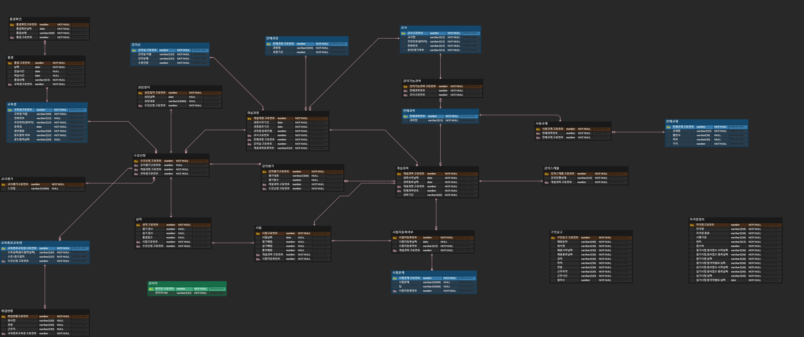
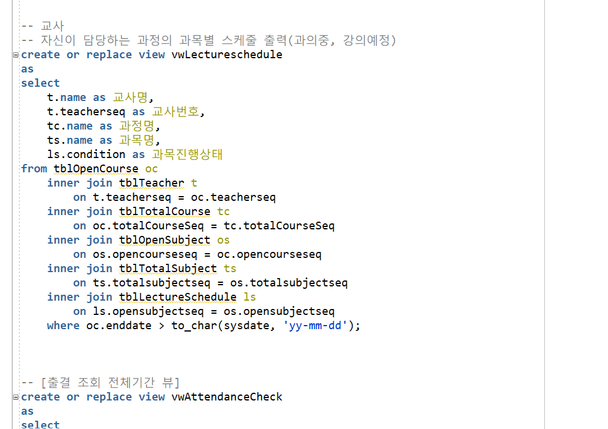
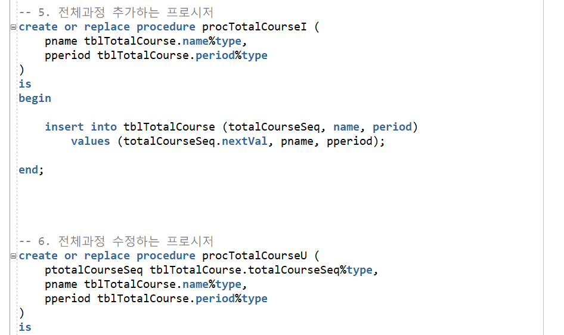
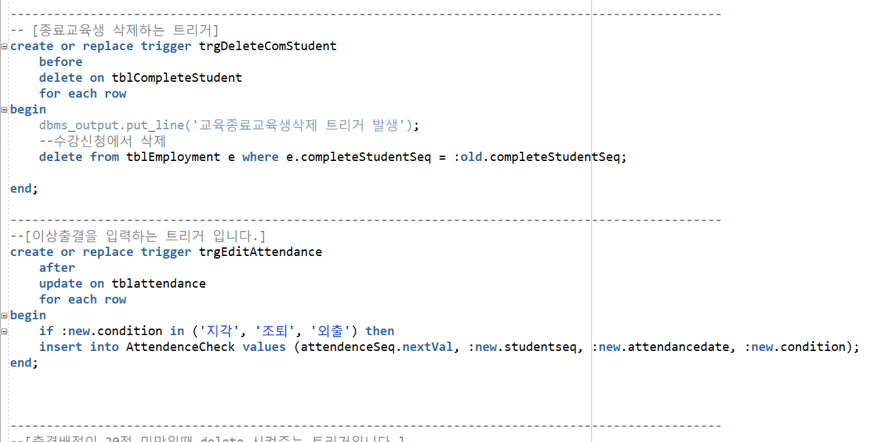
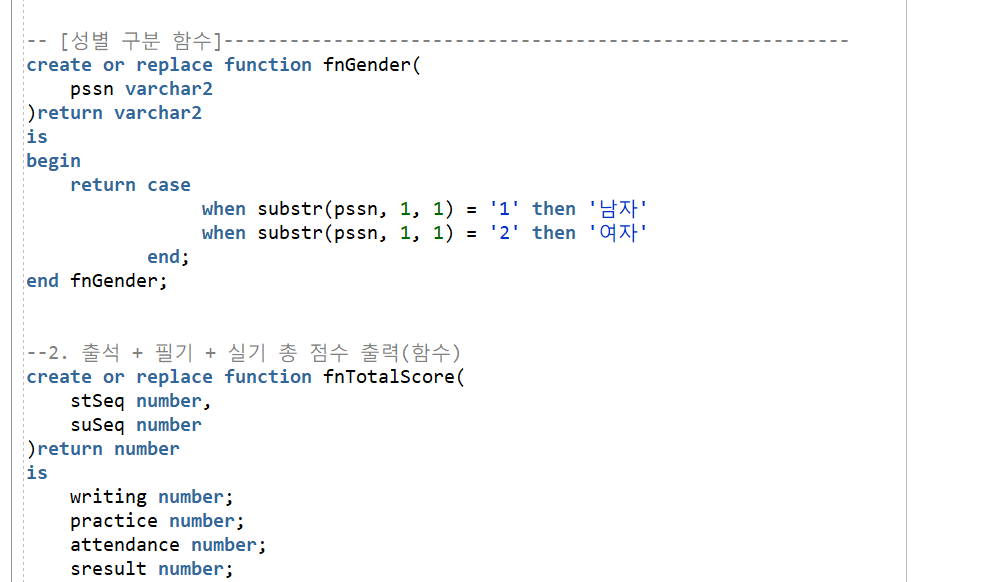
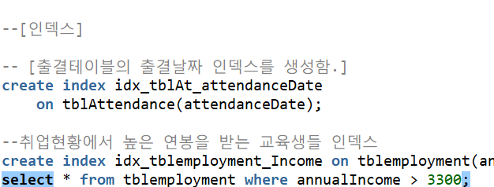

프로젝트명 :
교육센터 운영 데이터베이스
- 교육센터 운영에 필요한 데이터들를 관리해주는 프로젝트입니다.
- Oracle과 sql Developer를 통해 데이터의 중복을 피하며 정보 처리를 효율적으로 수행하는
서로 관련성을 가지며 중복이없는 데이터베이스를 구현했습니다.

개발환경 및 순서
- 개발기간:2021/05/24 ~ 2021/06/04
- 개발 툴: SQL Developer, erdCloud
- 사용언어: SQL언어
- 순서 : 요구분석서 > ERD > DDL > Dummy > DML
구현 목표
- 학원 시스템의 교육생, 관리자, 교사의 기본기능 구현한다.
- 교육생관련 구인공고와 종료된 교육생들의 취업현황 구현한다.
- 관련 자격증 데이터 구현한다.
구현화면 및 설명
- ERD Model

- 데이터 ERD 모델을 구현하면서 상하관계를 고려해 구성된 테이블들을 관계를 연결했고
정적,동적 테이블을 구분하여 정적테이블을 기준으로 동적 테이블을 연결했습니다.
- 이렇게 구현한 ERD를 토대로 구상했던 기능들을 구현했습니다.
- View

- 서로 다른 테이블에 있는 필요한 데이터들을 한개의 테이블에 있는
가상테이블처럼 만들어 사용할 수 있는 View를 join을 통해 생성해 사용했습니다.
- 직접 구현하는 과정에서 View를 사용하면 데이터 관리를 간단하게 할 수 있고 sql을 간소화 시킬 수 있다는것을 알았습니다.
- Procedure

- 필요한 데이터를 얻기위해서 select문을 계속 반복해서 작성해야했지만 프로시저를 만든 후
재사용 가능하게 함으로써 쿼리문 속도 향상을 해줍니다.
- 하나의 프로시저로 여러 SQL문을 실행 할 수 있다는걸 직접 느낄 수 있었습니다.
- Trigger

- 테이블 데이터에 이벤트가 발생했을때 데이터를 직접 변경하지 않아도 그 이벤트에 따라 다른 명령을 실행하게하는 트리거를 이용해
복잡한 처리를 한번에 쉽게 구현 할 수 있었고 어떠한 데이터를 삭제할때 foreign key로 연결되어있는 데이터를 삭제할때 편리했습니다.
- Fuction

- 데이터를 얻기 위해 직접 구현하지 않아도 Function을 통해 결과값을 얻을 수 있습니다.
- return을 통해 값을 반환하기 때문에 select를 통해서만
데이터를 얻을 수 있고 함수를 사용하면서 함수의 기능을 확인 할 수 있었습니다.
- Index

- 테이블의 데이터를 검색하기 위해 index를 사용하는데
이 프로젝트에서 데이터의 양이 큰 편에 속하는 출결 테이블에서
사용을 많이하는 출결 날짜의 인덱스를 만들었습니다.
- 더 큰 데이터를 다루게 된다면 인덱스는 훨씬 유용하게 사용될것이라고 생각했습니다.
프로젝트를 통해 느낀점
- 오라클 프로젝트를 진행하면서 데이터베이스에 대해 배우면서 데이터 관리 하는 법을 배웠습니다.
원하는 데이터를 where절로 얻어내고 order by나 group by를 통해
정렬 및 그룹화를 할 수 있다는것을 알게됐고 이러한 방식으로 데이터들이 관리되는것이 신기했습니다.
테이블을 생성할 때 Check절로 미리 제약사항을 걸 수 있다는게 나중에 다른언어와 연동됐을때도 좀 더 활용성 있을것이라고 느껴졌습니다.
ERD를 처음 생성할때도 테이블끼리의 관계때문에 어려웠습니다.
하지만 조원들과 동적,정적 테이블을 구분하고 수정 끝에 완성된 ERD를 구현할 수 있었고
다음 프로젝트에서 ERD를 보다 빨리 구현해낼 수 있었습니다.
이 프로젝트를 통해 데이터베이스를 직접 다뤄보면서 실력을 향상시킬 수 있었습니다.
마지막입니다. 끝까지 봐주셔서 감사합니다.